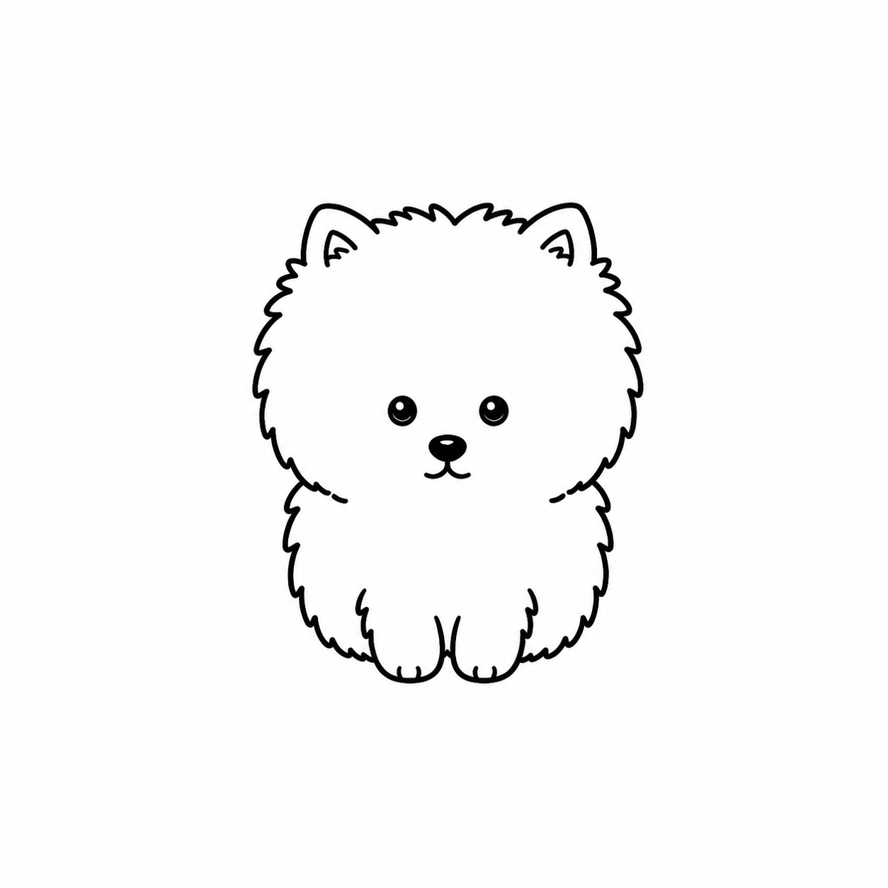

Results · run_20260820_075822
Selected result와 Best-so-far를 함께 봅니다
Selected Iteration
Iteration
score
Best-so-far image
overall
0.00
best-so-far
0.00
structure
0.00
sketch style
0.00
선택 결과
우선 수정 포인트
피드백
다음 프롬프트
Results Overview
Original, First, Best-so-far, Last
첫 결과와 마지막 결과만 비교하지 않고, 지금까지 관찰된 최고 결과를 함께 봅니다. 마지막 iteration이 항상 최고라는 보장은 없기 때문에 Best-so-far를 별도로 보존합니다.
Original

First · Iteration 1

iteration
79.50
best
79.50
Make the upright ears slightly smaller, higher, and closer together.
Best · Iteration 11

iteration
93.04
best
93.04
Make the centered nose slightly narrower without moving it.
Last · Iteration 11
iteration
93.04
best
93.04
Make the centered nose slightly narrower without moving it.